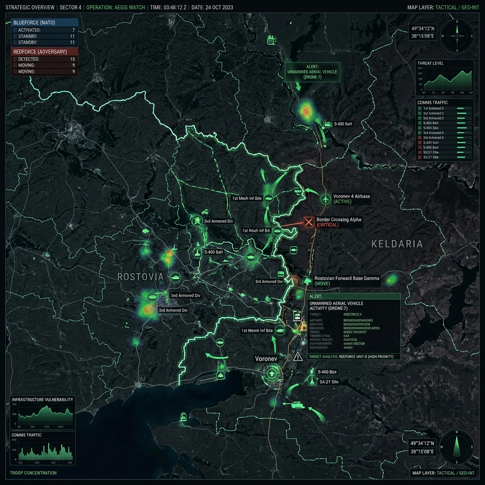
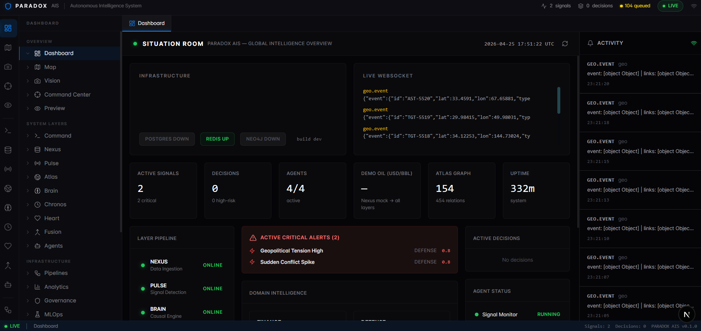
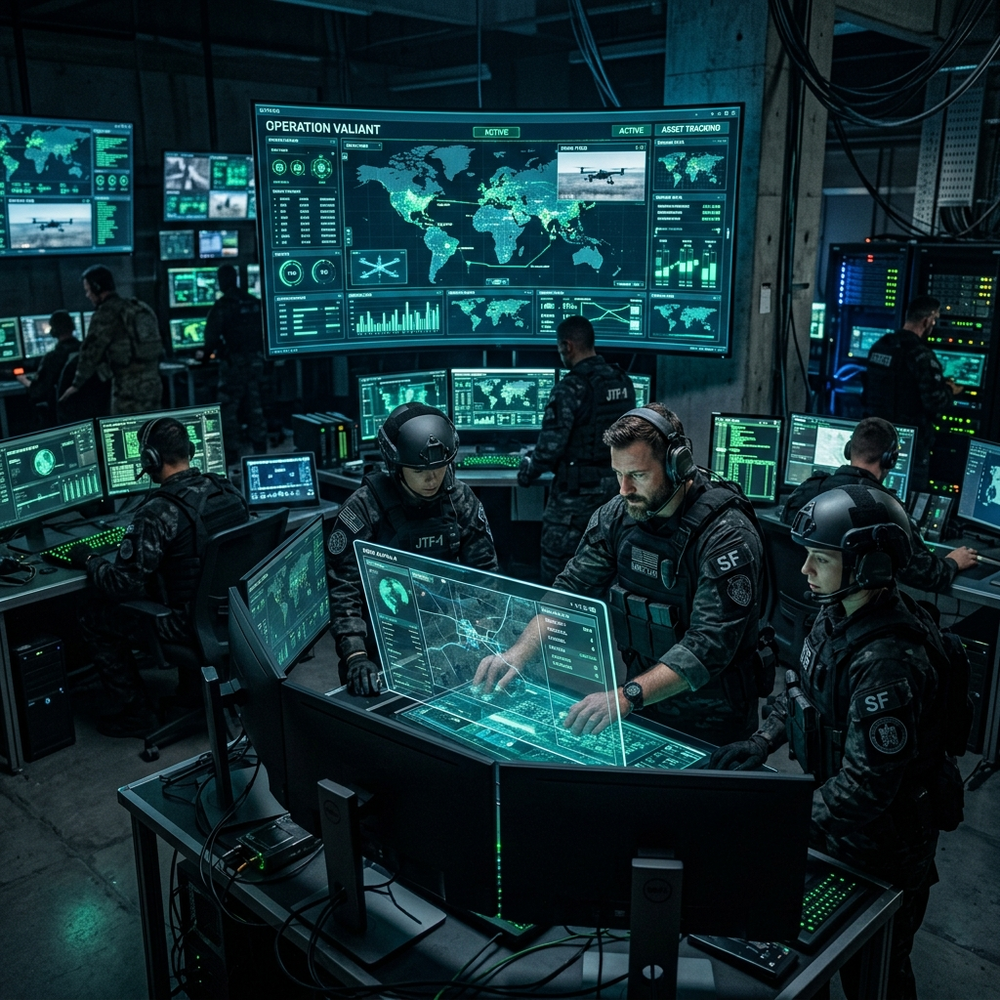

PARADOX AIS
The operating system for autonomous strategic intelligence. Moving beyond data integration into causal simulation.
SECURITY NOTICE: This is an advanced intelligence system. Access is strictly controlled.
Authorization required for deployment. Unauthorized access is prohibited.
Most intelligence platforms tell you what is happening.
Paradox AIS tells you what will happen next.
Designed by ParadoxAI Lab, Paradox AIS is the first commercially available operating system capable of executing autonomous causal simulations for defense and global enterprise.

Global Signal Ingestion
ParadoxAIS observes a global live-feed of geopolitical signals—from natural disasters to troop movements and economic shifts—updated every 45 seconds to ensure operational superiority.
Scenario Activation
When tension nodes are detected, the system does not wait for a human operator. It instantly initiates thousands of parallel "What-If" scenarios targeting specific regional and economic flashpoints.
Monte Carlo Execution
Using the v4 Causal Engine and the Atlas Graph knowledge base, Paradox runs 1,000+ simulations in seconds, modeling multi-agent utility functions to eliminate traditional defensive bias.
Decision Supremacy
The output is not just an alert. It is a mathematically sound Strategic Briefing providing exact probabilities, causal narratives, and a step-by-step Action Plan based on Reward - Risk * Uncertainty.
The Paradox AIS Software Suite
Pulse Detection Pipeline
The ingestion layer. It continuously pulls from global OSINT, commodity pipelines, and proprietary defense databases. Crucially, it ranks signals by strategic consequence, stripping away the noise that causes defensive bias.
The Atlas Graph
A living knowledge base that maps the causal relationships of the world. Rather than just storing objects, Atlas understands how a shift in maritime logistics in the Strait of Hormuz causally affects European energy grids.
v4 Simulation Engine
The core differentiator. When a threat triggers, the engine runs 1,000+ Monte Carlo pathways in seconds. It models adversarial utility functions to find realistic futures instead of assuming worst-case scenarios.
Strategic Briefing
Translating massive computational power into decision clarity. The system generates executive-ready narratives, exact probabilities, and a prioritized action plan scored dynamically by the Reward - Risk * Uncertainty matrix.
Designed for consequence.
While legacy systems (like Palantir Gotham) rely on object-relational mapping for human analysts, ParadoxAIS creates a new category of autonomous strategic intelligence.
| Vector | Legacy Systems (Gotham) | ParadoxAIS |
|---|---|---|
| Primary Goal | Data Integration & Analysis | Simulation & Decision Support |
| Output | "What is the situation?" | "What happens next?" |
| Core Tech | Object-relational mapping | Monte Carlo + Causal Engine |
| Decision Bias | Relies on human operator | Algorithmic diversity penalty |
[04:22:19 UTC] > Connecting to Atlas Graph... [OK]
[04:22:20 UTC] > DETECTED TENSION: Taiwan Strait Node.
[04:22:21 UTC] > Running 1,000+ Monte Carlo pathways...
[04:22:23 UTC] > ... calculating multi-agent utility functions ...
[04:22:25 UTC] > OUTPUT: 82% PROBABILITY OF ESCALATION.
[04:22:25 UTC] > ⮑ Action: [Hedge energy exposure] [Initiate backchannel].
The Operator Dashboard

Operational Readiness

Special Operations Integration: ParadoxAIS feeds directly into tactical command centers, providing security forces with real-time situational awareness and causal risk vectors before deployment.
Global Node Architecture: The system maintains persistent surveillance across thousands of global nodes, ensuring unbroken intelligence coverage even in highly contested informational environments.